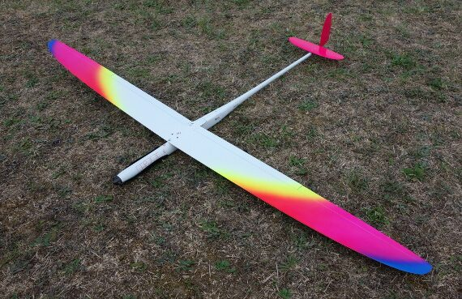
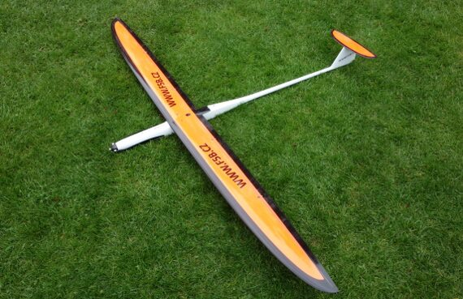
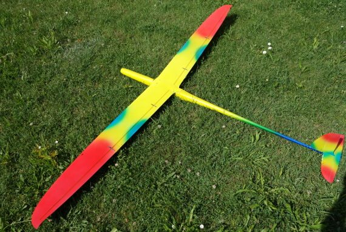
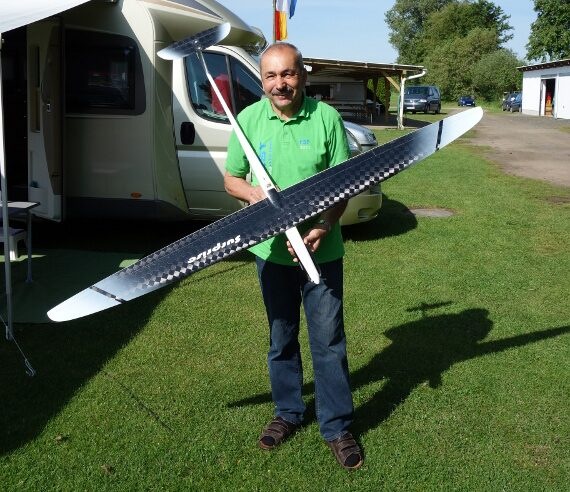

Planes
The most popular FAI planes currently flying:

Avionik B-series
The plane most used at the top and at international events. Amazing build quality — an actively-iterated design, now well past B16 with each generation a refinement on the last.
Photo: f5b.de


FlipFlop
Japanese team-developed plane, popular on the FAI circuit.
Older / second-hand models
No longer in production, but can be found on the second-hand market:

Surprise 17
Coming from a long line of predecessors and a legend in F5B, Rudolf Freudenthaler.
Photo: f5b.de
Enigma / Alex
Top-of-the-range beginner F5B plane. Strong as a house and affordable — now hard to get hold of.
Raketenwurm 4 (RW4)
Yet to fully prove itself, but seems on par with the Avionik in terms of performance.
Hawk F5B
Bottom-of-the-range beginner F5B plane. No flaps.
Batteries
You don't need expensive batteries to have a go at F5B. Anything that gives you the performance you want, and enough run time to complete the flight, is good enough.
How much run time do you need? Enough to climb to about 120m and complete a few lengths of the course within the 200 seconds allowed — plus a couple of climbs to height during the duration part of the flight.
Whatever batteries you use, they'll likely benefit from being warm before the flight. In winter it's essential that the battery pack doesn't start from too cold a temperature — most pilots heat the pack up beforehand in a home-made heater of some sort.
The heating systems in use are as individual as the pilots: heated food boxes, model car tyre heaters, commercial units, and more.
Data Logging
You don't need a data logger to have a go at F5B, or even for your first few competitions — but once you want to refine your motor performance, a logger helps. If you want to get involved in the FAI competition classes, you'll need one.
The most commonly used loggers in F5B are from SM Modellbau, though their website can be confusing when working out exactly what you need. Here's a starting shopping list.
Minimum for F5B logger / limiter function
- UniLog2 — part no. 3000
- 400A current sensor, for battery with female on +ve terminal — part no. 2517 (white writing)
- 400A current sensor, for battery with female on -ve terminal — part no. 2537 (black writing)
Common extras
- Brushless rpm sensor — part no. 2213
- Temperature sensor (best / smallest) — part no. 2225
- Temperature sensor (cheaper) — part no. 2221
Other optional items
- Patch cable for telemetry to Rx (if you have a telemetry radio) — part no. 9101
- Pitot tube speed sensor — part no. 2560
- UniDisplay — part no. 2400
UniLog in English
The UniLog and other SM Modellbau units come with comprehensive instructions, but unfortunately for English speakers, they're all in German. Having translated them for his own benefit, club member Dick Whitehead has made them available to other non-German speakers below.
Please note: these translations and notes are "NOT SM approved" and the translator does not speak German, so there may be errors. That said, they work and hopefully help others too.